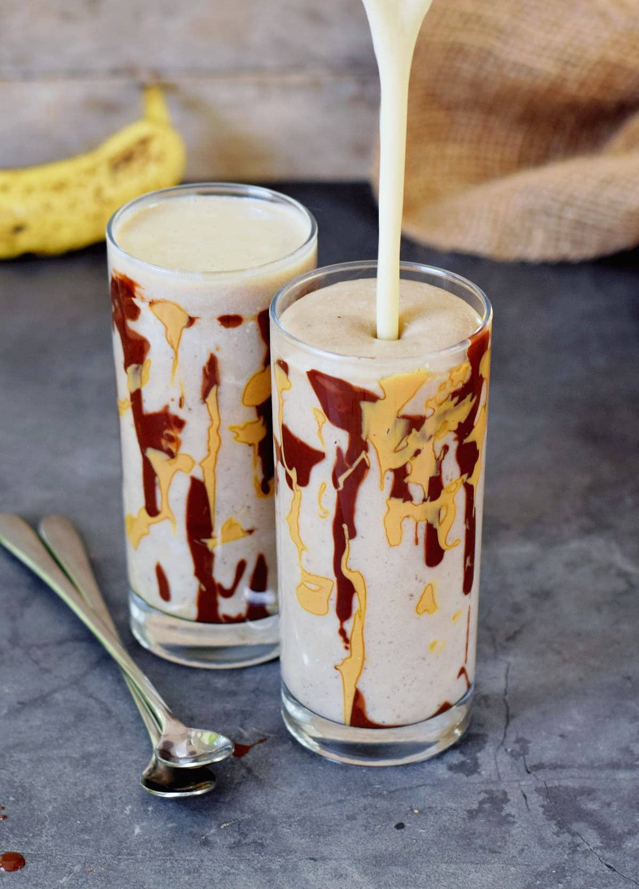

The Definitive Nay Nay Smoothie

Description
Start your day right with our Classic Banana Smoothie.
Perfectly creamy, naturally sweet, and packed with wholesome goodness, this simple smoothie is pure comfort in a glass.
Whether you need a quick breakfast on the go, a refreshing post-workout refuel,
or a simple, healthy treat, this timeless recipe is the perfect choice.
Ingredients
- 2 ripe bananas, preferably frozen and sliced
- 1/2 plain soy yogurt
- 1 cup of milk (dairy, almond, or oat work well)
- 1 tablespoon of honey or maple syrup (optional, to taste)
- 1/2 teaspoon of vanilla extract
- A handful of ice cubes (optional, for a thicker smoothie)
Preparation
-
Combine Ingredients:Place all ingredients into your blender. Adding the milk first can help the blades move more easily.
-
Blend:Secure the lid and blend on high speed for 30-60 seconds, or until the mixture is completely smooth and creamy. If needed, stop the blender and scrape down the sides with a spatula.
-
Check and Adjust:Check the consistency. If it's too thick, add a splash more milk. If it's too thin, add a few more ice cubes or a piece of frozen banana and blend again.
-
Serve:Pour the smoothie into a glass and enjoy immediately.
Odin Recipes